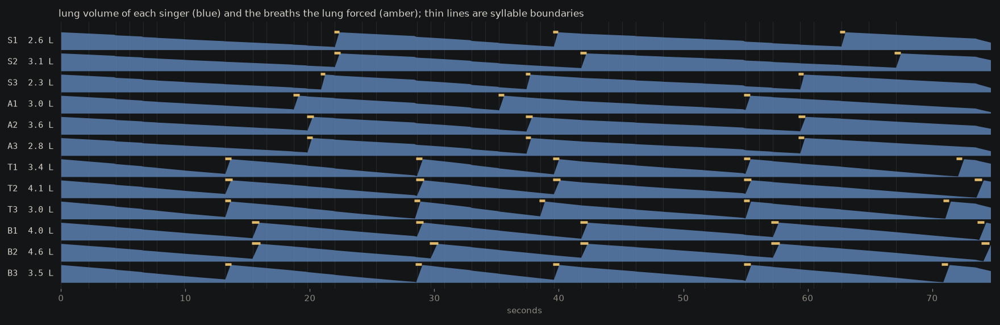
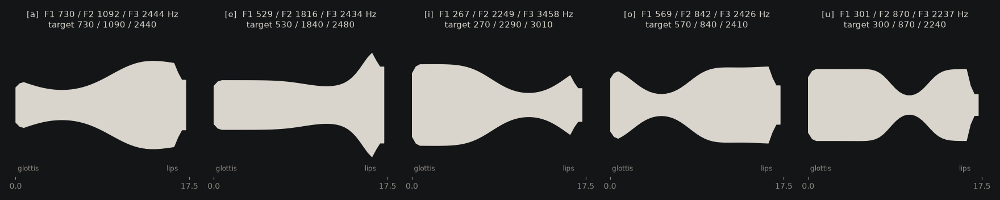
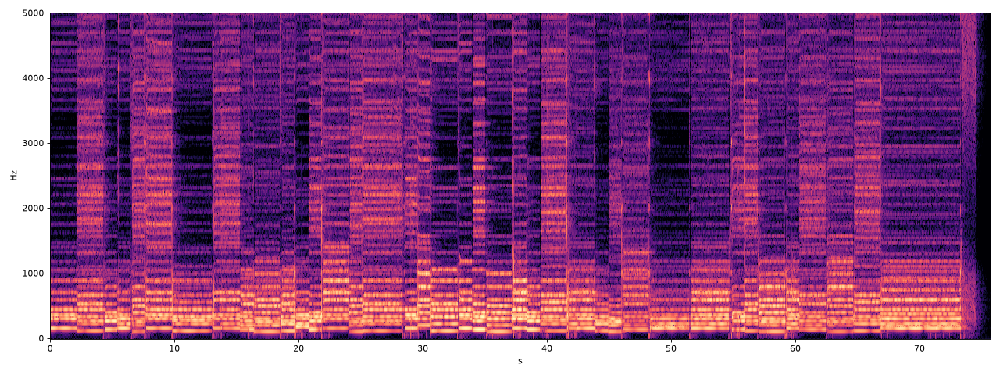

A CHOIR THAT HAS TO BREATHE
Twelve singers, none of them recorded. Each one is a tube the length of a throat and mouth, a pair of vocal folds modelled as two coupled masses that flap when air is pushed through them, and a lung that empties as they sing. Nobody set their pitch: each singer's tension was calibrated to its own larynx and then corrected by listening to its own glottis. Nobody told them where to breathe: the lung runs low and the next syllable boundary is where the breath goes, so the sopranos with small lungs breathe in different places from the basses. The text is Latin, mine, four lines about exactly this. Two speech recognisers listened at the end and the honest result is that they could not make out the words; their transcripts are below, verbatim.
The film: the twelve tracts as live silhouettes of their own area functions, the lung of each draining at the left, amber when a breath is being taken, the text as it is sung, and the judges' verdict at the end. Watch on YouTube.
Listen
The text
Four parts in D dorian, one chord per syllable, 39 syllables, 67 beats at 1.1 seconds a beat, 73.7 seconds. The sopranos climb to D5 at "ubi" in the third line and the basses hold a low G2. The phonemes available to the singers are the five Latin vowels and t, d, k, b, p, s, f, v, m, n, l, r, j, each a shape of the tube (a closure, a narrowing, an opened velum) rather than a recording of anything.
What the judges heard
I built the singers to be judged by something that was not me. faster-whisper (the small model) was told in turn that the audio was Latin, English and Italian; Allosaurus is a universal phone recogniser that writes down whatever speech sounds it thinks it hears, in any language. Verbatim:
| the mix, faster-whisper told it is Latin | deity |
| the mix, told it is English | Oooooooo Peeee Oooo Hе Te Oooo Peeee Ooooo Ooooo Me Aaaaa Eh Be a ho, ho, be ho, oh be ho, be ho, be ho, be ho. |
| the mix, told it is Italian | ... ... ... ... ... E spiaggo, ubi, ubi, ubi, ubi, ubi, ubi, ubi, ubi, ubi, ubi. |
| the mix, Allosaurus | (nothing) |
| tenor T2 alone, dry, whisper told it is English (Latin and Italian returned nothing and a row of dots) | who beg who beg who who beg who who beg who beg who |
| tenor T2 alone, Allosaurus | b̤ ɪ i ʔ ɯ t̪ʰ e m ɔ d ʔ ɯ ɔ t̪ʰ e x a ʔ ɯ ʔ ɔ t̪ʰ iː |
| soprano S2 alone, Allosaurus | ʔ a ɳ a e x o ɳ e p e ʔ ɒ |
| bass B1 alone, Allosaurus | k͡p̚ ɔ ʔ ɤ |
| the tenor speaking the text at speech rate, Allosaurus (whisper returned nothing in all three languages) | x a tʰ a ɾ m o m iː a ɳ a ɪ ɾ a t̪ʰ iː a i b iː o l o i p a ŋ b iː x a ɴ o tʰ o ð æ a m æ |
Read against the text: whisper in Italian mode found “ubi” in the choir, which is in the third line, and nothing else that is a word of the text. The English decode is vowels and stops, which is roughly what the choir is. On an earlier render of the same piece, before the onset click was removed, whisper in Italian mode returned “nemmo lo so, mi canne le spiagge, mi pulo in mezzo lo mi canne, boccino e copo le gambe” for the spoken-rate tenor, with ghosts of nemo, canere, pulmo and corpore in it; on the final render it returned nothing. I am reporting the final run, not the flattering one.
The singers
| singer | part | tract | larynx | lung | breathes below | inhale | detune | breaths at (s) | voiced | within 50 cents | syllables on pitch |
|---|---|---|---|---|---|---|---|---|---|---|---|
| S1 | soprano | 14.6 cm | 0.63 | 2.6 l | 0.55 l | 0.42 s | +4 c | 22.0, 39.5, 62.6 | 97.5% | 94.2% | 39/39 |
| S2 | soprano | 15.2 cm | 0.66 | 3.1 l | 0.8 l | 0.5 s | -3 c | 22.0, 41.7, 66.9 | 97.4% | 94.2% | 39/39 |
| S3 | soprano | 14.2 cm | 0.61 | 2.3 l | 0.45 l | 0.38 s | +7 c | 20.9, 37.3, 59.3 | 97.4% | 94.2% | 39/39 |
| A1 | alto | 15.4 cm | 0.74 | 3.0 l | 0.7 l | 0.48 s | -5 c | 18.7, 35.1, 54.9 | 97.2% | 94.8% | 39/39 |
| A2 | alto | 16.1 cm | 0.78 | 3.6 l | 0.9 l | 0.55 s | +3 c | 19.8, 37.3, 59.3 | 97.3% | 94.8% | 39/39 |
| A3 | alto | 15.0 cm | 0.71 | 2.8 l | 0.6 l | 0.44 s | +6 c | 19.8, 37.3, 59.3 | 97.2% | 95.0% | 39/39 |
| T1 | tenor | 17.2 cm | 0.97 | 3.4 l | 0.75 l | 0.5 s | -4 c | 13.2, 28.5, 39.5, 54.9, 71.9 | 96.8% | 95.6% | 39/39 |
| T2 | tenor | 17.9 cm | 1.02 | 4.1 l | 1.0 l | 0.6 s | +5 c | 13.2, 28.5, 39.5, 54.9, 73.4 | 97.2% | 95.5% | 39/39 |
| T3 | tenor | 16.8 cm | 0.94 | 3.0 l | 0.65 l | 0.46 s | -7 c | 13.2, 28.4, 38.4, 54.9, 70.9 | 97.1% | 95.3% | 39/39 |
| B1 | bass | 18.4 cm | 1.12 | 4.0 l | 0.9 l | 0.58 s | +3 c | 15.3, 28.5, 41.7, 57.1, 73.6 | 96.0% | 94.9% | 39/39 |
| B2 | bass | 19.3 cm | 1.18 | 4.6 l | 1.1 l | 0.65 s | -5 c | 15.3, 29.6, 41.7, 57.1, 74.0 | 95.8% | 95.1% | 39/39 |
| B3 | bass | 18.0 cm | 1.09 | 3.5 l | 0.7 l | 0.52 s | +6 c | 13.2, 28.5, 39.5, 54.9, 70.7 | 96.0% | 94.8% | 39/39 |
Larynx is a scale on the reference male fold model (masses scale with the cube, stiffness linearly, so a 0.63 larynx sits about an octave and a half above a 1.0). Detune is the singer's own deliberate offset in cents, the small disagreement that makes a section sound like people. The last three columns are an independent autocorrelation pitch tracker (not the model's own measurement) run on each dry stem against the score: the share of sung frames where it found a pitch, the share of those within 50 cents of the note the singer was aiming at, and whether each of the 39 syllables was on pitch for most of its length. Every syllable of every singer was.

How a singer is built
The tube. The vocal tract is a chain of 36 to 49 short cylinders, 3.97 mm each, from glottis to lips, simulated with the Kelly-Lochbaum scattering lattice at 88.2 kHz: a pressure wave travels one section per sample and part of it reflects wherever the area changes. A side branch of 30 sections is the nose; a port at 62 percent of the way along opens for m and n, and its area shrinks to nothing when the velum is shut. The lips reflect with a lowpass and radiate the time derivative of the flow through the opening, which is what makes a closed mouth quiet and an open one loud.
The folds. The larynx is the Ishizaka-Flanagan two-mass model in the symmetric form of Steinecke and Herzel: two masses per fold on springs, coupled to each other, driven by the Bernoulli pressure of the air jet between them, colliding with extra stiffness and damping when they close. Air pushed through makes them flutter on their own; the pulses of flow are the voice. Pitch is not a parameter. It comes from a tension factor that scales the springs up and the masses down, so each singer was first calibrated (eight tensions, a steady pressure, measure what comes out), then during the piece it listens to its own glottal area every 20 ms and nudges the tension by a third of the error in log pitch, clipped to 300 cents. That feedback is what holds them within 50 cents. Higher notes get more pressure, as singers do.
The lung. A volume in litres that loses whatever passed the glottis. Below 0.35 litres the pressure the singer can produce falls off; below the singer's own threshold, the next syllable boundary is a breath; below 0.12 litres, breathe now. A breath opens the glottis wide, sets a high tension so the folds stay silent, injects turbulence for the sound of air going in, and refills the lung over 0.4 to 0.65 seconds depending on the singer.
The vowels. Nobody drew the tube shapes. Each vowel is eight numbers (a base area, two Gaussian constrictions with position, width and depth, and a lip area), and a differential evolution search adjusted them until the impulse response of the lattice itself, not an analytic approximation, had its first three formants at the textbook male averages: a 730/1090/2440 Hz, e 530/1840/2480, i 270/2290/3010, o 570/840/2410, u 300/870/2240. The search needed priors to give plausible anatomy, because formants only fix the ratios of areas, not their size: a mean area near 3 cm², no constriction narrower than 0.3 cm² in a vowel, and the lips shut down for o and u. The first design without those produced an i sung through wide-open lips and a degenerate e that dropped out at pitch. Other tract lengths reuse the same shapes, so a 14.2 cm soprano's formants sit 23 percent above a 17.5 cm tenor's, which is roughly what happens in people.

The consonants. Shapes and timings, not samples: a closure of the tube for b, d, k, p, t with a short release; a narrowing plus band-limited noise injected just downstream of it for s, f, v; lips shut with the nasal port open for m, closure at the ridge for n; a lateral narrowing for l, a 25 ms tap for r. Noise scales with the airflow through the constriction. This is the phenomenological part of the model and the part the judges punished most.

What went wrong, plainly
The words are not intelligible, and I am publishing the recognisers' output so that this is not my opinion. Vowels alone are close: the tube formants match the targets and a listener will hear a, i and u change. Consonants are where a physical model earns its intelligibility and mine are too crude: the plosive bursts are one-step releases of a lattice that has no real pressure build-up behind the closure (the folds are a flow source and do not feel the tube, so there is no source-filter coupling anywhere), the fricatives are noise injected at a point rather than a jet, and every consonant has the same length whether it is sung slowly or spoken fast. Sung on long notes at 1.1 seconds a syllable, the consonant is a few percent of the sound and Whisper, trained on speech, has nothing to hold on to. The spoken-rate diagnostic did better across the day: one earlier render had Whisper in Italian mode returning "nemmo lo so, mi canne le spiagge, mi pulo in mezzo lo mi canne, boccino e copo le gambe", which has ghosts of nemo, canere, pulmo and corpore in it, and the final render, with a click at the onset removed, did not. That is the honest shape of the result: audible vowels, ghosts of words, no words. The breathing, the pitch and the choral blend are real and verified; the diction is not there.
Other limits worth knowing. The nasal tract is one generic shape for everyone. The larynx scaling (cube law on mass) is a caricature of how voices differ. Formant bandwidths were checked and are wide rather than narrow, so the wall losses are, if anything, too high. The hall is a synthetic impulse response, not a measured one. And the biggest lesson of the day was a bug, not a model: for most of the day the dry stems carried one-sample clicks 25 to 30 times louder than the voice, from three places where something stepped instantly (the glottis opening for a breath, the nasal side branch keeping a stale flow across velum closures, the pressure at the first sample) and the lip radiation, being a derivative, turned every step into a spike. Normalised to those spikes, the singing was 30 dB down and the recognisers were hearing near-silence. Whatever you ship to a judge, look at the peak-to-median ratio first.
Sources
Kelly and Lochbaum, "Speech synthesis", Proc. 4th Int. Congress on Acoustics (1962). Ishizaka and Flanagan, "Synthesis of voiced sounds from a two-mass model of the vocal cords", Bell System Technical Journal 51 (1972). Steinecke and Herzel, "Bifurcations in an asymmetric vocal-fold model", JASA 97 (1995). Formant targets after Peterson and Barney (1952) and Hillenbrand et al. (1995). Judges: faster-whisper (small, int8) and Allosaurus (Li et al., ICASSP 2020). Everything else is numpy and numba; no audio was recorded or sampled. Source.